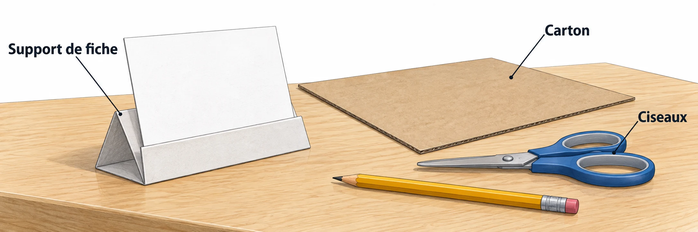

OBSERVER · EXPÉRIMENTER · EXPLIQUER
Un support plus stable
Explore les plis du renfort et prépare l’ordre du projet.

✎ Garde ta feuille à côté de toi.Ordinateur : manipulations et mesures simulées. Papier : relevés, réponses, calculs et croquis. Matériel réel : essai complémentaire si disponible.
Des observations pour expliquer
- Q1 : reporte ton organisation ; Q3 : trace le patron à taille réelle.
- Q4 : seule une fabrication suivie d’un essai permet de conclure sur ton support.
Appuie ton explication sur une valeur, un changement observé ou une comparaison. Distingue ce que montre le modèle et ce qui reste à vérifier.